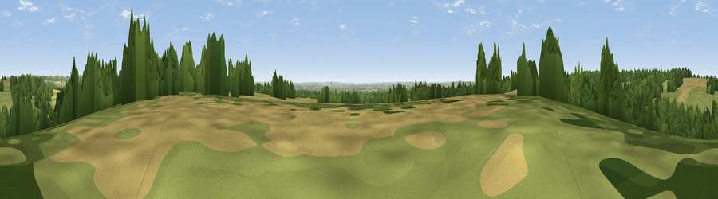

Viewpoint near Tangley
#29910 in England · top 50% of its area beats it · near TangleyThe view, rendered

A 360° render of this exact spot computed from the terrain model, tree cover and land cover — summer colours, afternoon light, calibrated against photographs of famous viewpoints. Real trees, hedges and buildings will differ in detail.
The panorama
Grey silhouette: terrain skyline in each direction (720 bearings, Earth curvature and refraction included). Dashed green: skyline with trees (+15 m) and buildings (+8 m) as obstacles. Blue strip: how far the ground is visible on each bearing.
Where the view opens
Wedge length = distance to the farthest visible ground on that bearing (vegetation-aware). Rings at 10, 25 and 50 km.
What fills the view
42% grassland · 30% woodland · 27% cropland ·
Angular shares of the visible panorama (visual magnitude), not map area. Landscape diversity 0.49 (0–1 Shannon).
Key numbers
More beautiful places nearby
The staircase of upgrades: each row has a higher view potential than everything closer. Driving times are estimates from straight-line distance, calibrated against real road routing — check an actual route before setting out.
| Place | Direction | Drive | Score |
|---|---|---|---|
| Viewpoint near Tangley | E · 1 km | ~2 min | 46.8 |
| Viewpoint near Vernham Dean | NNW · 3 km | ~6 min | 50.8 |
| Haydown Hill | NW · 3 km | ~8 min | 55.3 |
| Wexcombe Down | WNW · 7 km | ~14 min | 66.9 |
| Viewpoint near Ham | NNE · 8 km | ~16 min | 67.2 |
| Inkpen Hill | NNE · 8 km | ~16 min | 69.8 |
| Walbury Hill | NNE · 8 km | ~17 min | 70.0 |
| Gallows Down | NNE · 9 km | ~17 min | 75.6 |
51.28575, -1.52497 · source: screening · position refined by local search. Computed location — check access rights before visiting.